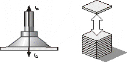
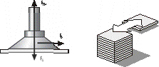
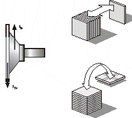
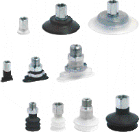
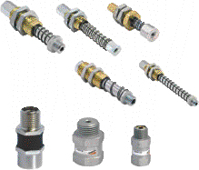
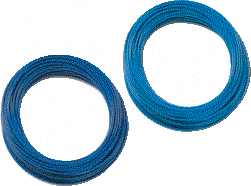

Вычисления в примере основываются на следующих данных
Заготовка:
- Материал: стальные листы, сложенные на палете
- Поверхность: гладкая, плоская, сухая
Параметры:
| длина |
макс. 2500 м. |
| ширина |
макс. 1250 м. |
| толщина |
макс. 2.5 м. |
| масса |
приблизительно 60 м. |
Система управления
| Используемая система |
портальный транспортёр |
| Имеющийся источник сжатого воздуха |
8 бар |
| Напряжение управляющих сигналов |
24 В |
| Захват/перемещение |
горизонтальный/горизонтальное |
| Макс. ускорение по осям |
X и Y: 5 м/с2, Z: 5 м/с2 |
| Время цикла |
30 с. |
| Требуемое время захвата |
<1 c |
| Требуемое время сброса |
<1 c |
Вычисление массы рабочего изделия
Для всех последующих вычислений важно знать массу изделия, с которой вы будете работать.
Она может быть вычислена по следующей формуле:
Масса [кг ]:м = L x B x H x ?
L = длина [м]
B = ширина [м]
H = высота [м]
? = плотность [кг/м3]
Пример: m=2.5 X 1.25 X 0.0025 X 7850
M = 61.33 кг
Расчёт сил - Какое усилие должна создавать присоска?
Для определения необходимой силы захвата, требуется провести вычисления массы, описанные выше. Кроме того, присоски должны уметь работать с силами ускорения, которые в полной автоматизированной системе отнюдь не незначительны.
Для упрощения вычислений три наиболее частых и важных случая изображены и описаны ниже.
Внимание:
В следующих упрощённых примерах случаев 1, 2,3 для вычислений всегда должен использоваться самый неблагоприятный вариант воздействия и максимальное значение сил.
Присоски и детали располагаются на горизонтально расположенные детали, перемещение горизонтальное
Вариант 1: горизонтально расположенная присоска, вертикальная сила

Fтн= теоретическая сила захвата [N]
m =масса [кг]
g = Ускорение свободного падения [9,81 m/s2]
a = Ускорение системы [м/с2] (Не забудьте случай аварийного отключения)
S = коэффициент запаса
(Минимальное значение 1.5, для критических неоднородных или пористых материалов или неровных поверхностей 2.0 или выше)
Пример:
Fтн=S*m(g+a)
Fтн= 61,33 x (9,81 +5)x 1,5
Fтн= 1363 N
Вариант 2: горизонтально расположенная присоска, горизонтальное перемещение
Присоски размещаются на изделиях горизонтально, изделия перемещаются в горизонтальной плоскости.

Fтн=m x (g +a/µ)x S
Fтн=Теоретическая сила захвата [N]
m =масса [kg]
g =ускорение из-за силы притяжения [9,81 m/s2]
a =система ускорения [м/с2] (необходимо помнить об аварийном случае!)
µ= коэфф. трения = 0,1 для жирных поверхностей
= 0,2 ...0,3 для влажных поверхностей
= 0,5 для дерева, металла, стекла, камней
= 0,6 для грубых поверхностей
Внимание:
Коэффициенты трения, показанные выше, являются усреднённым ивеличинами. Реальные значения для захватываемых изделий должны быть получены экспериментальным путём.
S =коэффициент запаса
Минимальное значение 1.5; выше для критических, неоднородных или пористых материалов или для грубых поверхностей 2.0 и выше.
Пример:
Fтн=61,33 x (9,81 +5/0,5)x 1,5 = 1822 N
Вариант 3: вертикально расположенная присоска, вертикальное перемещение.
Присоски размещаются на изделиях вертикально, изделия перемещаются в вертикальной плоскости или меняется их ориентация

Fтн=(m/µ)x (g +a)x S
Fтн==Теоретическая сила захвата [N]
m= масса [kg]
g =ускорение из-за гравитации [9,81 m/s2]
a =система ускорения [м/с] (Помните об аварийном случае!)
µ= коэфф. трения = 0,1 для жирных поверхностей
= 0,2 ...0,3 для влажных поверхностей
= 0,5 для дерева, металла, стекла, камней
= 0,6 для грубых поверхностей
S = коэффициент безопасности
Минимальное значение 2; выше для критических, неоднородных или пористых материалов или для грубых поверхностей.
Пример:
Fтн= (61,33/0,5)x (9,81 +5)x 2
Fтн= 3633 N
В условиях задачи указано, что изделия перемещаются в горизонтальном положении, поэтому результаты расчётов варианта 3 далее не учитываются.
Обработка результатов расчёта сил.
Сравнивая результаты, полученные при первом и втором вариантах, для дальнейших расчётов выбираем максимальную силу Fтн=1822 Н из второго варианта.
Как выбрать присоску?

Присоски обычно выбираются по следующим критериям:
Условия работы:
Условия работы (количество направлений перемещения, предполагаемый срок службы, рабочая среда, температура ...) с точки зрения использования являются основным критерием при выборе присосок.
Поверхность:
В зависимости от характера поверхности выбирается вариант исполнения присоски. Номенклатура включает плоские и сильфонные (гофрированные) присоски.
Пример:
В рассматриваемом примере для захвата стальных листов будем использовать плоские присоски Мод. VTCF из материала NBR.
Это лучшее и наиболее эффективное решение для захвата гладких плоских поверхностей.
Сила захвата Fs[n]
Fs = Fтн/n
Fs - Сила захвата
Fтн - Теоретическая сила
N - Количество присосок
Пример:
Для стальных листов средних размеров (2500 х 1250 мм) будем использовать от 6 до 8 присосок.
Наиболее важным критерием выбора числа присосок в этом примере является гибкость стального листа во время транспортировки.
Вычисление силы захвата Fs[n]
Fs== 1822/6 Fs=304 N
Для серий VTCF, 6 pcs присосок модели VTCF-0950F необходимая сила захвата для каждой присоски составляет 340Н.
Fs== 1822/8 Fs=228 N
Для серий VTCF, 8 pcs присосок модели МЕСА-800N необходимая сила захвата для каждой присоски составляет 260Н.
В данном примере решаем использовать 6 присосок модели VTCF-950N, так как данного количества присосок достаточно, а стоимость системы при этом ниже.
Внимание:
Максимально допустимая нагрузка присоски должна быть больше рассчитанного значения.
Выбор принадлежностей

Обычно, способ крепления присосок определяется требованиями заказчика. Однако, существует множество причин, по которым требуется использование дополнительных крепёжных
- Неровные или рваные поверхности Присоска должна приспосабливаться к форме поверхности
- Гибкий ниппель NPF
- Различная длина или толщина
Присоски должны быть подпружиненными для того, чтобы компенсировать различия в высоте
Пружинный фиксатор
Пример:
В рассматриваемом примере стальные листы сложены на палете. Если листы больше палеты, они могут свисать по краям. Это означает, что присоски должны компенсировать значительную разницу в высоте и углов наклона отдельных частей листа.
Решаем использовать следующие крепёжные элементы:
Пружинный плунжер Мод. NPM-FM-1/4-75. Необходимо, чтобы максимальный ход плунжера компенсировал максимальные отклонения краёв листа. Для компенсации угловых отклонений краёв листа используем гибкий ниппель модели NPF, который подключается к плунжеру по резьбе 1/4.
Обратные клапаны Мод. VNV.
Они используются на вакуумных распорных механизмах, содержащих множество присосок для блокирования тех присосок, которые не покрывают изделие (при захвате изделий различных длин).
Примечание:
При выборе встраиваемых элементов необходимо удостовериться в том, что их можно вкручивать в присоски, т.е. Что они имеют резьбы одинакового размера. Также необходимо обратить внимание на грузоподъёмность встраиваемых элементов.
Выбор вакуумных трубок

Размер вакуумной трубки должен соответствовать выбранным присоскам.